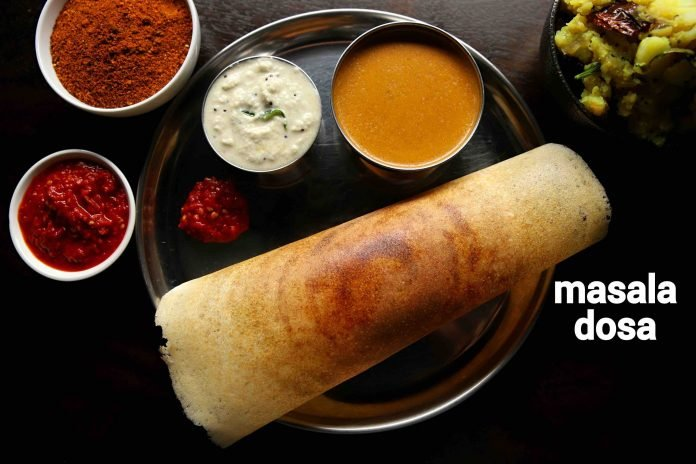

masala dosa recipe | crispy masale dose | how to make masala dosa with detail photo and video recipe. an easy and popular, tasty south indian staple breakfast recipe made with rice and urad dal. basically an extension to the traditional dosa recipe, where dosa is made crisp and stuffed with potato masala. it is perhaps one of the famous dishes from south india, which is can be served for morning breakfast or also as an evening snack with coconut chutney and sambar.
masala dosa recipe | crispy masale dose | how to make masala dosa with step by step photo and video recipe. south indian recipes are known for healthy and steamed rice-based breakfast recipes. these generally fall into either the dosa or idli category which in turn has many varieties with subtle variations. under the dosa category, the most popular variation is masala dosa or locally known as masale dose served with a choice of coconut chutney and spicy sambar.
well, there is a great story about the origin of the famous masale dosa. there are many stories around india, but according to the wiki, it originated from my hometown udupi. it was here in udupi, the dosa’s were made crisp and served. one of the local restaurants in udupi started to serve potato masala stuffed dosa as a variation and also to lower the coconut chutney consumption. in those days, coconut-based dishes were considered pricey and dosa’s cannot be consumed without any side dish. gradually stuffed dosa became one of the norms and the migrant community took this variety to mumbai and exposed it to a broader audience. it was very well received in the cosmopolitan city and that’s how it became one of the popular dose varieties.
firstly, in a large bowl take 3 cup sona masuri rice and ½ tsp methi.
rinse well and soak in enough water for 4 hours.
in another bowl take 1 cup urad dal, 2 tbsp toor dal and 2 tbsp chana dal.
rinse well and soak in enough water for 2 hours.
after soaking dal for 2 hours, drain off the water and transfer to the grinder. you can also grind in mixi if you do not have access to a grinder.
add water as required and blend to smooth paste.
scrape sides. the smooth and fluffy batter will be ready after 40 minutes.
transfer the batter to a large vessel and keep aside.
in the same grinder add soaked rice and 1 cup rinsed poha.
add water slowly and scrape the sides. blend to a coarse paste.
transfer the rice batter to the same urad dal batter.
mix well making sure everything is well combined.
ferment in a warm place for at least 8 hours or until the batter doubles in volume. if you are living in a cold climate, then you can place the batter in the warm oven (just heat the oven until it turns slightly warm and then turn off) to ferment.
once the batter is well fermented, mix gently, without disturbing the air pockets.
transfer 4 cups of fermented batter to a small bowl and add 1 tsp salt.
firstly, add a ladleful of batter on hot tawa.
spread as thin as possible making a crispy dosa.
take 1 tsp of butter and spread uniformly.
also, place 2 tbsp of prepared aloo masala in the centre.
roast until the dosa turns golden brown and crisp.
scrape the sides of dosa and roll the dosa.
finally, masala dosa recipe is ready to serve with coconut chutney and sambar.